Neste conteúdo, a discussão sobre as ferramentas de desenvolvedor disponíveis nos navegadores Chrome e Firefox será aprofundada. Inicialmente, serão explorados os recursos específicos de cada navegador, desde o inspetor de elementos e o console de depuração do Chrome até o modo de desenvolvedor e os painéis de ferramentas do Firefox.
Serão explorados também os benefícios que cada ferramenta oferece aos desenvolvedores web. Por último, você verá como usar essas ferramentas para melhorar a performance de uma página web. Além disso, serão fornecidos alguns exemplos de como depurar código e encontrar elementos HTML (hyper text markup language).
O Google Chrome, lançado em 2008, é um dos navegadores mais populares do mundo. Ele oferece suporte a diversas extensões e plugins, além de oferecer ferramentas de desenvolvedor para os desenvolvedores web, que permitem a depuração de código e a otimização de performance.
O Google Chrome dispõe de diversas ferramentas de desenvolvedor que podem ser acessadas pelo menu hamburger (três traços ou três pontos alinhados horizontalmente), que fica no canto superior direito do navegador, e depois clicando em Mais ferramentas e em Ferramentas do desenvolvedor. Outra opção é usar a combinação de teclas Ctrl + Shift + i.
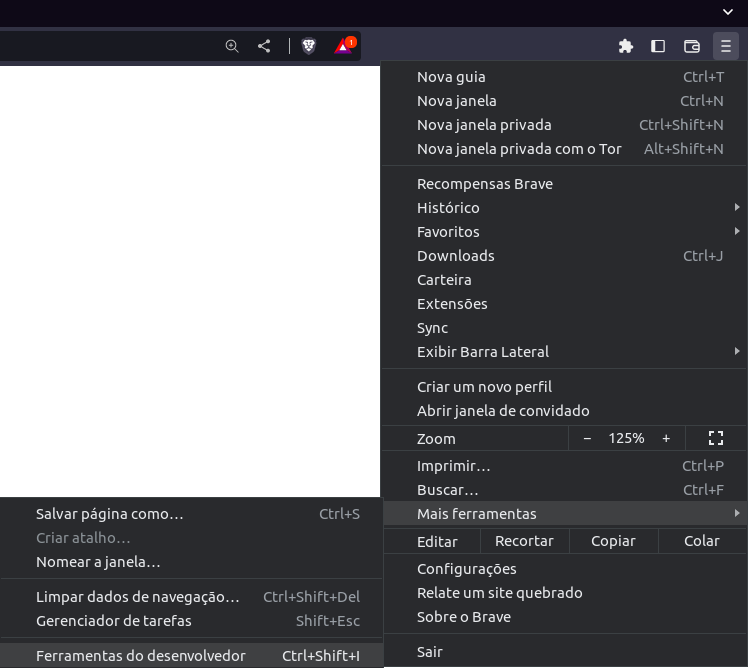
Figura 1 – Acessando Ferramentas do desenvolvedor no Google Chrome
Fonte: Senac EAD (2023)
A imagem mostra o canto superior direito do navegador Google Chrome com o botão no menu Hamburger pressionado e o cursor sobre a opção “Mais ferramentas” e “Ferramentas do desenvolvedor”.
Isso abrirá a janela das ferramentas de desenvolvedor, que incluem a depuração de código HTML, a análise de performance de páginas web, a visualização de recursos de rede etc.
Essas ferramentas são extremamente úteis para todos os usuários, desde os mais experientes até os menos experientes. Elas permitem que você visualize, edite, analise e teste o código de páginas web, assim como também modifique o comportamento do navegador.
A ferramenta Elementos (ou Elements) é uma das ferramentas mais úteis e permite a edição de código HTML. Essa ferramenta permite que você visualize o código HTML da página web que você está visualizando, assim como também permite editá-lo em modo de visualização.
Essa ferramenta permite que você faça alterações e verifique-as alterações em tempo real, permitindo que você teste e visualize as alterações que irá fazer no seu código.
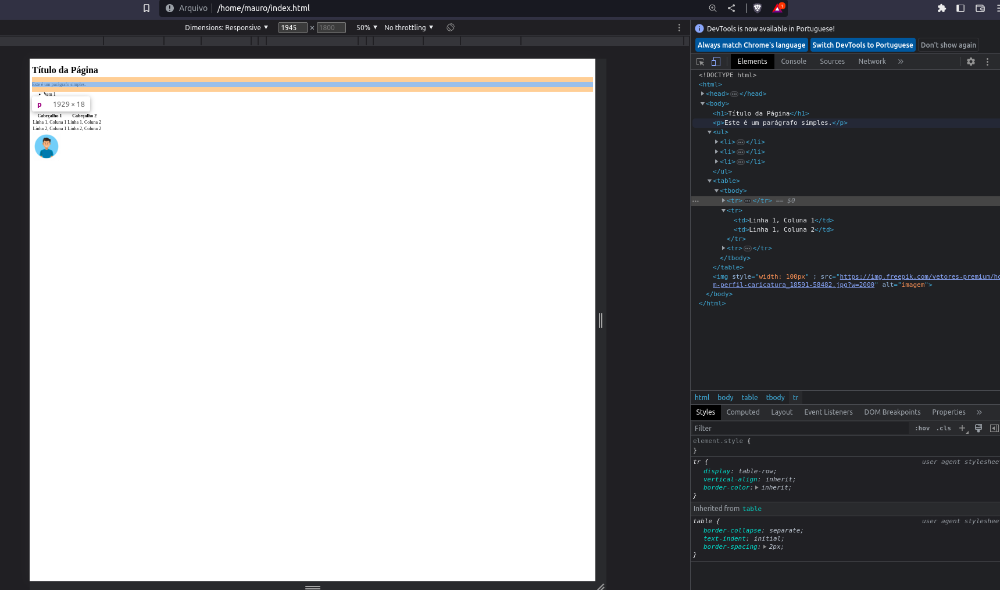
Figura 2 – Aba Elements em ação
Fonte: Senac EAD (2023)
A imagem mostA imagem mostra um site simples no lado esquerdo do navegador Google Chrome e no lado direito as Ferramentas do desenvolvedor com as abas Elementos na parte superior e Estilos na parte inferior.
Na parte superior, você pode visualizar o código HTML, e ao passar o cursor sobre alguma tag ela será destacada no site. Ao dar um duplo clique, você pode editar a tag e ver o resultado na tela, lembrando que esse resultado não é salvo no seu código.
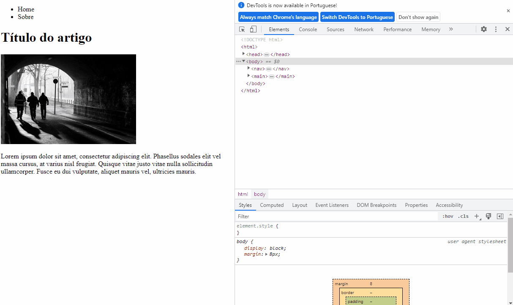Aba Element da ferramenta de Debug no Chrome em ação. O mouse passa pelo texto do HTML exposto nessa aba e, à medida que passa pelas tags, destaca uma área na página que está sendo exibida à esquerda. Em um momento há duplo clique no conteúdo de uma tag <li> e altera-se esse conteúdo. Em outro momento, seleciona-se um tag <img> e deleta-se, fazendo com que suma da visualização da página.
Na parte inferior da caixa de elementos, você encontra outras abas, entre elas Estilos (Styles). Com o estilo css que está sendo carregado para o elemento selecionado, você pode ver e editar o estilo (que não será salvo no seu arquivo css). Além disso, o quadro de estilos css mostra de qual arquivo css está vindo o estilo.
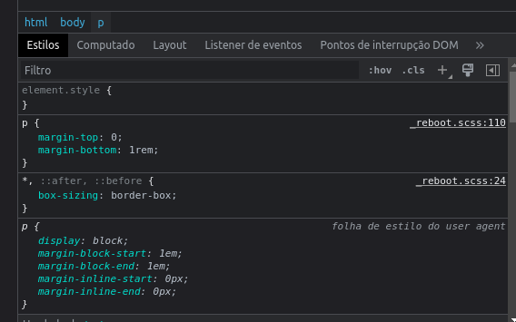
Figura 3 – Painel Estilos
Fonte: Senac EAD (2023)
A imagem mostra o painel estilos das Ferramentas do desenvolvedor do navegador Google Chrome.
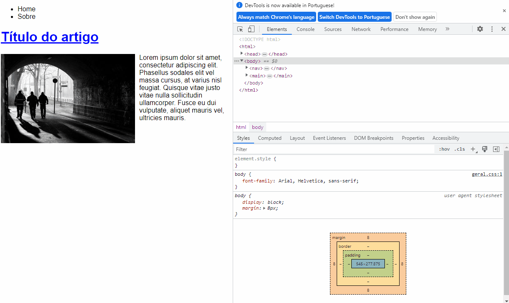A animação mostra a aba “Styles” aberta, seleciona-se o elemento <body> na aba “Elements” e em Styles aparece o estilo aplicado, que é o estilo da fonte. Clica-se na caixa de seleção ao lado desse estilo e nota-se que a fonte mudou de estilo na página à esquerda. Depois se digita um novo estilo trocando a cor do texto para vermelho. O mouse então vai para o título na página e, clicando com o direito, usa a opção “Inspecionar elemento” que seleciona o <h1> em Element, mostrando seu estilo aplicado na aba “Styles”. Clica-se na caixa de seleção ao lado do estilo “color: blue”, desabilitando e fazendo com o que o título fique vermelho. Depois se clica de novo e o título volta a azul. Depois duplo clique em “blue” e digita-se green e o título fica verde. Clica-se então no link “geral.css” à direita do estilo, que leva a detalhes do arquivo css com os estilos.
Ainda no quadro de elementos, a caixa Computado mostra quais estilos de tamanho estão valendo para o elemento, incluindo altura, largura, borda, padding (distanciamento interno) e margin (distanciamento externo).
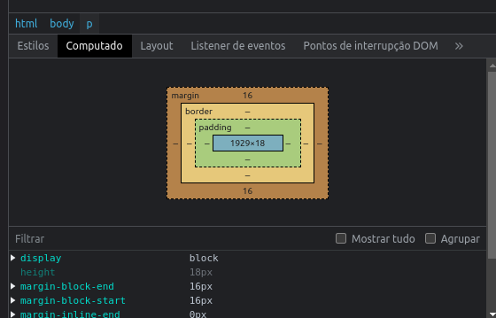
Figura 4 – Aba Computado (Computed)
Fonte: Senac EAD (2023)
A imagem mostra o painel computado das Ferramentas do desenvolvedor do navegador Google Chrome.
Esta é outra ferramenta extremamente útil que permite a depuração de JavaScript. Essa ferramenta permite que você visualize os resultados do código JavaScript da página web que você está visualizando, assim como também permite editá-lo. Essa ferramenta permite que você depure o seu código, analise as variáveis e interaja com o código enquanto ele é executado.
Ao escrever seu código JavaScript, você pode acrescentar mensagens que aparecerão no console. A seguir, você verá algumas dessas mensagens, porém existem várias outras.
Além das mensagens que você mesmo pode colocar no seu código JavaScript, ainda é possível ver as mensagens que o JavaScript gera ao tentar executar um trecho de código.
Por exemplo, caso você tente acessar uma variável ou um objeto nulo, aparecerá uma mensagem no console. Da mesma forma, se seu JavaScript buscar um arquivo fora que esteja inacessível, uma outra mensagem aparecerá no console, ajudando a encontrar os erros do seu código.
Veja um breve exemplo:
<script>
console.log("Esta é uma mensagem no console")
</script>
No navegador fica:
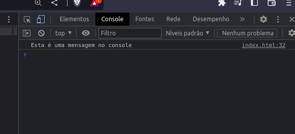
Figura 5 – Aba Console
Fonte: Senac EAD (2023)
A imagem mostra a Aba Console das Ferramentas do desenvolvedor do navegador Google Chrome, com a mensagem “Esta é uma mensagem no console”.
Observe um erro na busca de um arquivo JavaScript no console. O resultado é o seguinte:
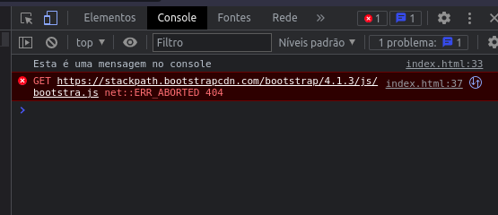
Figura 6 – Mensagem de erro na aba Console
Fonte: Senac EAD (2023)
A imagem mostra a Aba Console das Ferramentas do desenvolvedor do navegador Google Chrome, com a mensagem “Esta é uma mensagem no console” e com um erro ERR ABORTED 404.
Assim como no painel Elementos, no qual é possível editar em tempo real os trechos de HTML e CSS (cascading style sheets), no console é possível escrever trechos de código JavaScript diretamente no console. Basta clicar, escrever o trecho de código e teclar Enter.
Veja um exemplo:
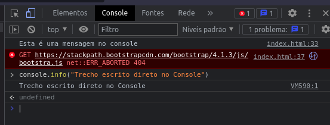
Figura 7 – Digitando comandos na aba Console
Fonte: Senac EAD (2023)
A imagem mostra a Aba Console das Ferramentas do desenvolvedor do navegador Google Chrome, com a mensagem “Esta é uma mensagem no console”, com um erro ERR ABORTED 404 e com um trecho de código console.info e o resultado do comando que é a mensagem “Trecho escrito direto no Console”.
No painel Fontes (Sources), é possível ver toda essa estrutura de arquivos carregada pelo navegador e, em alguns casos, acessar diretamente os arquivos, abrindo ou executando scripts diretamente do navegador.
É claro que essa manipulação depende da tecnologia usada para criar o site e principalmente se é um site local. Caso esteja visualizando em um site on-line, a maior parte dos acessos estará limitada.
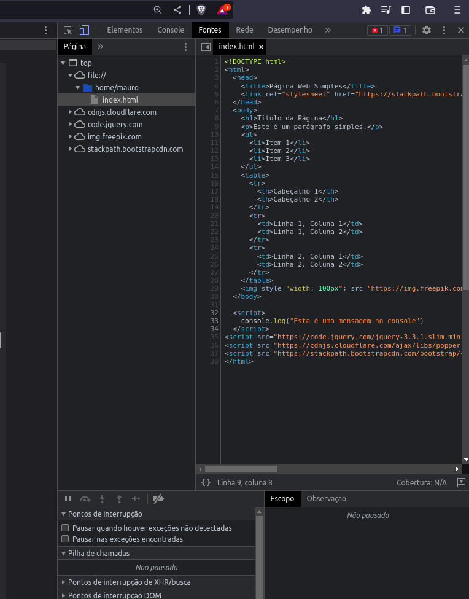
Figura 8 – Aba Fontes
Fonte: Senac EAD (2023)
A imagem mostra a Aba Fonte das Ferramentas do desenvolvedor do navegador Google Chrome, com a listagem de arquivos no lado esquerdo com o arquivo index selecionado e à direita o conteúdo do arquivo index.html.
Na aba Redes (Network), é possível ver em tempo real o carregamento dos elementos do site e o tempo que cada elemento carregou.
Sites que demoram a carregar afastam os usuários. Nesse sentido, a aba Rede permite identificar elementos que estão aumentando o tempo de carregamento e otimizar, corrigir ou eliminar o elemento em questão.
Observe, na figura a seguir, que o arquivo não encontrado é o que mais demora para carregar. Ou seja, até um erro que aponta para um arquivo não encontrado (erro 404) pode derrubar o tempo de carregamento.
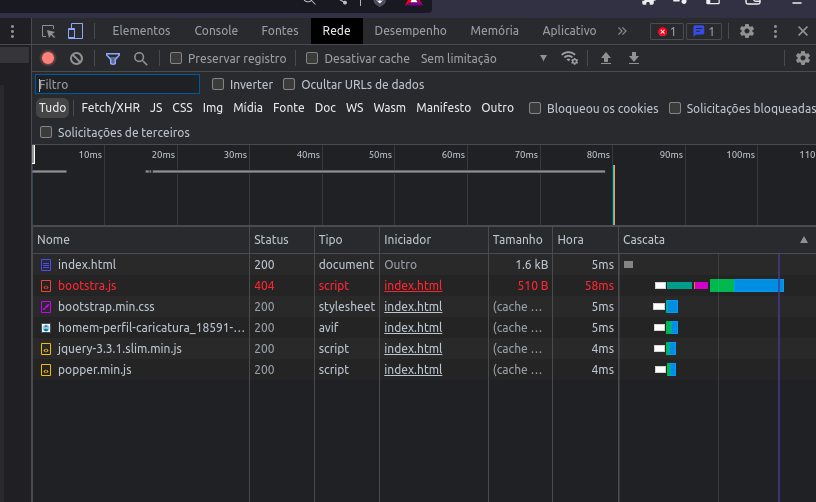
Figura 9 – Aba Rede
Fonte: Senac EAD (2023)
A imagem mostra a Aba Rede das Ferramentas do desenvolvedor do navegador Google Chrome, com a listagem de arquivos e suas respectivas propriedades de carregamento.
O Firefox é um navegador web que fornece aos usuários uma variedade de ferramentas de desenvolvedor para facilitar o processo de desenvolvimento web. Essas ferramentas podem ser acessadas por meio de seu menu de ferramentas de desenvolvedor, localizado no canto superior direito da tela, ao clicar no ícone hamburger (três linhas horizontais). Uma vez que o menu de desenvolvedor esteja aberto, você poderá ver todas as ferramentas de desenvolvedor disponíveis.
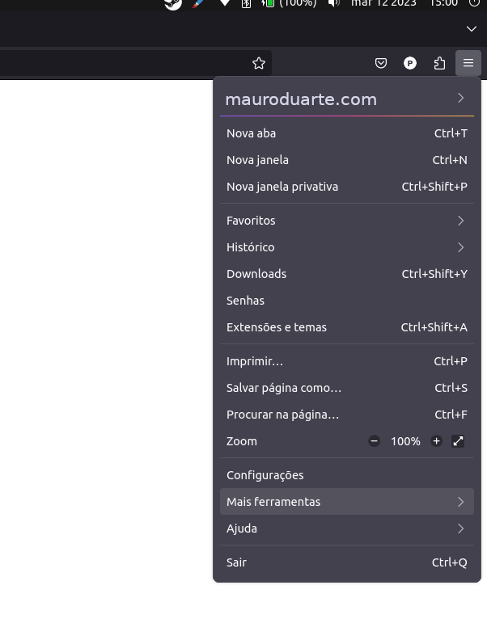
Figura 10 – Acessando as ferramentas de desenvolvimento no Firefox
Fonte: Senac EAD (2023)
A imagem mostra o canto superior direito do navegador Mozilla Firefox com o botão no menu hamburger pressionado e o cursor sobre a opção “mais ferramentas”.
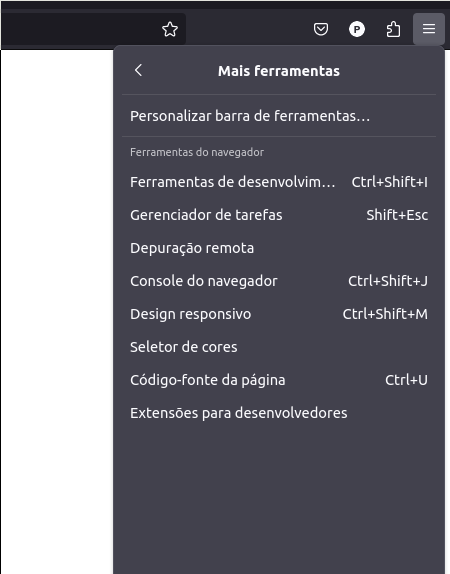
Figura 11 – Acessando as ferramentas de desenvolvimento no Firefox
Fonte: Senac EAD (2023)
A imagem mostra o canto superior direito do navegador Mozilla Firefox com o botão no menu hamburger pressionado e o cursor sobre a opção “Ferramentas de desenvolvimento”.
Você também pode acessar essas ferramentas pelo atalho Ctrl + Shift + i.
As ferramentas de desenvolvedor do Firefox são muito semelhantes às ferramentas do Google Chrome, basta localizar as ferramentas equivalentes.
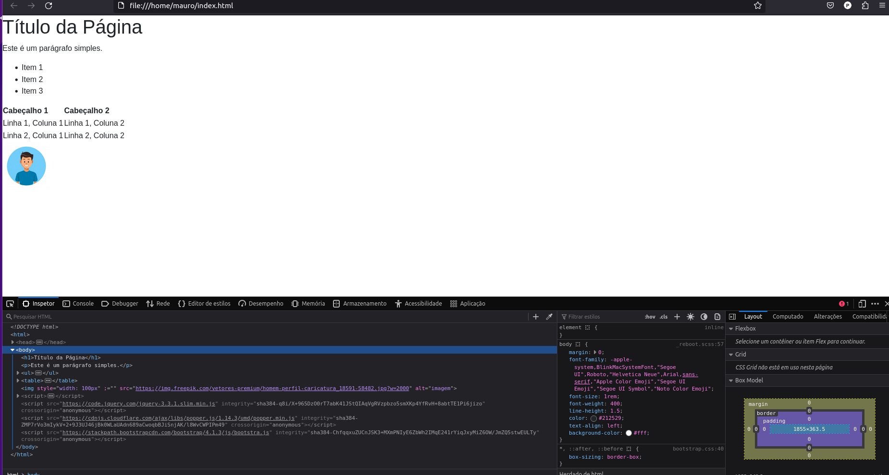
Figura 12 – Ferramenta de desenvolvedores do Firefox
Fonte: Senac EAD (2023)
A imagem mostra um site simples na parte superior do navegador Mozilla Firefox e na parte inferior as Ferramentas do desenvolvedor com a aba Inspector selecionada mostrando código HTML na esquerda, os estilos css na coluna do meio e na direita o painel computado.
Na aba Inspector, você encontrará o equivalente ao painel Elementos do Google Chrome, mostrando o código HTML na esquerda, os estilos css na coluna do meio e o painel Computado à direita.
As abas Console e Rede funcionam da mesma forma que seus equivalentes no Google Chrome.
A aba Debugger corresponde à aba Fontes do Google Chrome, com o mesmo funcionamento.
Tanto o Firefox quanto o Google Chrome podem ser usados para testar a responsividade do seu site. No Chrome, essa funcionalidade é ativada automaticamente quando se entra no painel Ferramentas de desenvolvedor. Já no Firefox, é preciso acessar novamente o menu hamburger, clicar em Mais ferramentas e, depois, em Design responsivo ou utilizar o atalho Ctrl + Shift + M.
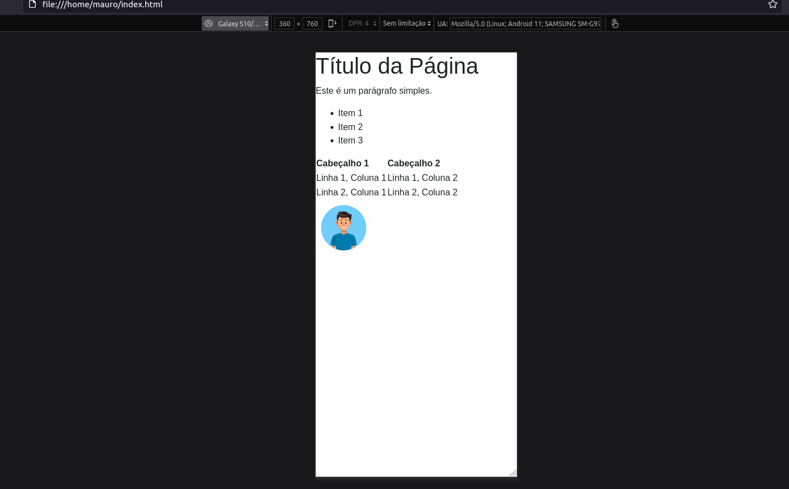
Figura 13 – Visualização em dimensões de smartphone
Fonte: Senac EAD (2023)
A imagem mostra um site simples afetado pelo painel de responsividade do Firefox simulando um Galaxy S10.
Na parte superior do painel Design responsivo, é possível escolher qual dispositivo ele emulará para que você veja o resultado, ou definir um tamanho específico em pixels para a visualização. Também é possível alternar entre formato retrato ou paisagem do dispositivo emulado.
O Chrome oferece extensões exclusivas para ajudar os desenvolvedores a aperfeiçoar seu trabalho, enquanto o Firefox tem o próprio conjunto de extensões e ferramentas de desenvolvedor integradas, que podem ser ativadas no menu hamburger, opções Mais ferramentas e Extensões.
As ferramentas de desenvolvedor dos navegadores também podem ser abertas dando um clique com o botão direito em qualquer elemento do site e escolhendo a opção Inspecionar elemento. Essa maneira, além de abrir o painel das ferramentas de desenvolvedor com a aba Elementos do Google Chrome ou Inspector do Firefox, deixará selecionado o elemento em que foi dado o clique. Assim, fica muito mais fácil encontrar o código fonte do elemento que você deseja analisar.